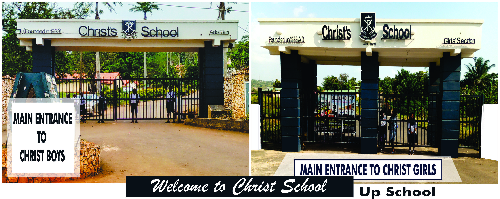

About The School: Christ School was founded on 30 June 1933 by the British missionary, Archdeacon Henry Dallimore. Originally christened 'Ekiti Central School,' it began as a co-educational secondary school, taking students into classes V and VI. It took the name, 'Christ's School, Ado Ekiti,' following the recommendation of Sir Bernard Henry Bourdillon, the Governor of then Northern and Southern Protectorates of Nigeria. In 1936, it relocated to its permanent and current site, the Agidimo Hills.[2] It was conceived as an attempt to advance secondary school education in Ekitiland and Western Nigeria in an atmosphere where discipline, diligence and academic excellence would be nurtured and guaranteed.
Christ School is large and was grouped into different sections for better performance. The school is grouped into Three [3] Sections which are: